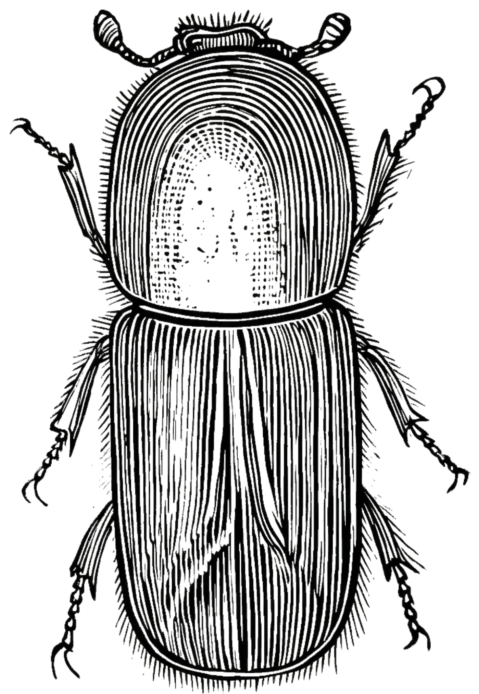

<!DOCTYPE html>
<html lang="en">
<head>
    <meta charset="UTF-8">
    <meta name="viewport" content="width=device-width, initial-scale=1.0">
    <title>Tracking Rapid 'Ōhi'a Death</title>
    
    <style>
    * {
        box-sizing: border-box; 
    }

    body, html {
        margin: 0;
        padding: 0;
        min-height: 100%; /* Better for overflow */
        background-color: #DEC79F; 
        font-family: 'EB Garamond', serif;
        color: #2c2c2c;
    }

    .dashboard {
        display: grid;
        width: 100vw;  
        min-height: 100vh; /* Changed from height to min-height */

        /* Removed the 60fr gutter, using gap instead */
        grid-template-columns: 516fr 1224fr;
        grid-template-rows: 836fr 184fr;
        
        /* Replaces the manual gutter column */
        column-gap: 2rem; 
        
        grid-template-areas: 
            "sidebar map"
            "sidebar footer";
    }

    .sidebar {
        grid-area: sidebar;
        display: flex;
        flex-direction: column;
        justify-content: center;
        align-items: stretch;
        padding: 0; 
        overflow: hidden;
    }

    /* Beetle Section */
    .beetle-section {
        flex: 35;
        display: flex;
        flex-direction: row; 
        justify-content: center;
        align-items: stretch;
        padding: 1.5rem; /* Changed from 20pt */
    }

    .beetle-image {
        display: flex;
        align-items: center;
        justify-content: center;
        height: 100%; 
    }

    .beetle-image img {
        width: 100%;       
        height: 100%;      
        object-fit: contain; 
        flex-shrink: 0;    
    } 

    .beetle-text {
        display: flex;
        flex-direction: column;
        justify-content: center; 
        text-align: center;      
    }

    .beetle-text p {
        font-size: 0.85rem; /* Adjust this value up or down as needed */
        line-height: 1.4;   /* Keeps the smaller text readable */
    }

    /* Red Divider */


    /* Ungulate Section */
    .ungulate-section {
        flex: 65; 
        display: flex;
        flex-direction: column; 
        padding: 1.5rem; /* Changed from 20pt */
    }

    .ungulate-graphics-container {
        display: flex;
        flex-direction: row; 
        flex: 80; 
    }

    .ungulate-header-text {
        flex: 20; 
        flex-direction: column;
        justify-content: center; 
        text-align: center;
    }

    .ungulate-header-text p {
        font-size: 0.85rem; /* Adjust this value up or down as needed */
        line-height: 1.4;   /* Keeps the smaller text readable */
    }

    .flex-half {
        flex: 1 1 50%; 
        flex-shrink: 0; 
    }

    .ungulate-grid {
        display: grid;
        grid-template-columns: 1fr 1fr;
        grid-template-rows: 1fr 1fr;
        gap: 10px;
    }

    /* MAP AREA */
    .map-section {
        grid-area: map;
        position: relative;
        /* Adjusted padding to use rem and account for the new column-gap */
        padding: 2rem 2rem 1rem 0; 
    }

    #map-container {
        width: 100%;
        height: 100%;
        background-color: #5591D7; 
        border: 2px solid #333;
        box-shadow: inset 0 0 10px rgba(0,0,0,0.1);
    }

    .footer {
        grid-area: footer;
        padding: 1rem 2rem 2rem 0; /* Changed from pt */
        display: flex;
        align-items: center;
        gap: 2rem; /* Changed from 30pt */
        border-top: 1px dashed rgba(0,0,0,0.2);
    }

    .footer-text {
        flex: 1;
        font-size: 1rem; /* Adjusted for standard web sizing */
        line-height: 1.6;
    }

    .footer-img {
        height: 7rem; /* Changed from 100pt */
        width: auto;
    }

    </style>
</head>
<body>

    <div class="dashboard">
        
    <aside class="sidebar">
        <article class="beetle-section">
            <div class="flex-half beetle-image">
                
            </div>
            <div class="flex-half beetle-text">
                <p>Wood boring ambrosia beetles play a central role in the spread of Ceratocystis wilt of
‘ohi ‘a, a fungal disease caused by Ceratocystis lukuohia that kills the bioculturally important ‘ohi ʻa (Metrosideros polymorpha) tree. Beetles contribute to the spread of the disease by extruding fungus-infected wood particles (frass). [1]</p>
            </div>
        </article>

        <article class="ungulate-section">
            <div class="ungulate-header-text">
                <p>The spatial patterns of ʻōhiʻa mortality observed across all four sites included in the study show significant differences in areas with and without ungulates, suggesting that ungulate exclusion is an effective management tool to lessen the impacts of ROD in forested areas in Hawaiʻi. [2]</p>
            </div>
            <div class="ungulate-graphics-container">
                <div class="flex-half ungulate-main-img">
                    </div>
                <div class="flex-half ungulate-grid">
                    </div>
            </div>
        </article>
    </aside>

        <main class="map-section">
            <div id="map-container">
            </div>
        </main>

        <footer class="footer">
        </footer>

    </div>

</body>
</html>